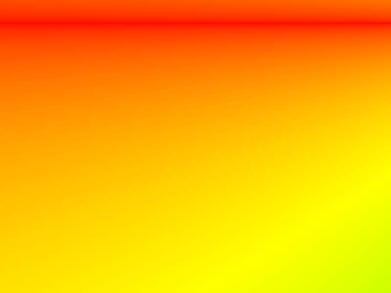
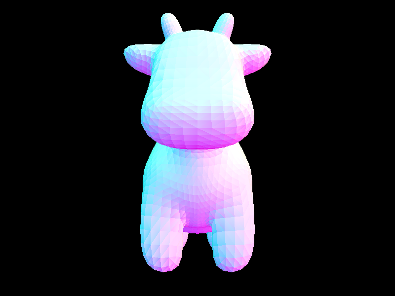

|
|
|
All of the text in your write-up should be in your own words. If you need to add additional HTML features to this document, you can search the http://www.w3schools.com/ website for instructions. To edit the HTML, you can just copy and paste existing chunks and fill in the text and image file names appropriately.
If you are well-versed in web development, feel free to ditch this template and make a better looking page.
Here are a few problems students have encountered in the past. Test your website on the instructional machines early!
"./images/image.jpg"Do NOT use absolute paths, such as
"/Users/student/Desktop/image.jpg"
.png != .jpeg != .jpg != .JPG
Here is an example of how to include a simple formula:
a^2 + b^2 = c^2
or, alternatively, you can include an SVG image of a LaTex formula.
In this project I implemented ray generation and triangle and sphere intersection as well as BVH construction. I was stuck on part 2 for a long time and was no longer able to render images past that point. I did my best to implement what I could of the project in the code using the math and logic from lecture and Ed, but could not visually show what I completed in the images.
First, I had to take the image coordinates, transform the coordinates to camera space, and generate the ray in world space using origin position and normalized direction vector. Second, I had to generate pixel samples by going through all the samples we have to evaluate, generating a ray, estimating the scene radiance, and adding this estimate to the vector that I update the pixel with. I initially struggled with little details in the first task such as the order of normalizing the vector. Debugging was hard because there were two tasks to look at and fix.
I had to implement two boolean functions for ray-triangle intersecton. The second function also updates values in isect variable. I utilized the Moller Trumbore Algorithm to calculate triangle intersection. I initially struggled with manipulating the vector values in the equation. I also implemented ray-sphere intersection using the algorithm from lecture.
|
|

|
|
|

|

|
I couldn't figure this one out because I struggled with which function was the main problem with getting intersections. The image would render, but nothing would intersect. I spent a lot of time rewriting this code and my implementation unfortunately couldn't work out, but the work is there. In part 2.1, I built on the root node and checked if the amount of primitives were greater than the maximum leaf size. If yes, I calculated the medians using the extents and split the primitives and then compared the centroids of the bounding boxes of the primitives. I then recursively called construct_bvh on the left and right schild nodes. In part 2.2, I implemented the algorithm from lecture to perform a ray-bounding box intersection test and updated t0 and t1. In parts 2.3, I tried to follow the algorithm from lecture. I reccursively call both functions on children and if the nodes don't have children I check for intersection on each primitive in the node. I short circuit the function in has_intersection and continue for the closest hit in intersect.
Cow before and after.
|  |
My Uniform Hemisphere Sampling function implementation estimates the direct lighting by sampling uniformly in a hemisphere. I looped over the number of samples, generating a random direction vector on the hemisphere and transformed it to world coordinates using the coordinate system at the hit point. I then created a new ray and checked for intersection with the scene's BVH. If it intersected, I calculated the L_out by multiplying the BRDF and the generated direction with the emission of the intersected surface and the cosine of the angle between the direction and the surface normal averaged the accumulated lighting over num_samples. I messed something up in one of the CGL files and could not load the importance sampling lighting images. My Light Sampling function implementation estimates direct lighting at an intersection point coming directly from a light. I looped over all the light sources in the scene, and for each light source, it samples the light at the intersection point. The number of samples is determined by whether or not the light source is a delta light or has an area. For each sample, I sampled the light source of the SceneLight and set its variables to the wi vector, distToLight, and pdf. I then created a new ray starting from the intersection point pointing towards the sampled direction. If the ray interseced with an object in the scene, I calculated L_out by multiplying the reflection coefficient at the intersection point with the emission of the intersected object and the cosine of the angle between the sampled direction and the surface normal and divided by the number of samples.
| Uniform Hemisphere Sampling | Light Sampling |
|---|---|
|
|
|

|

|